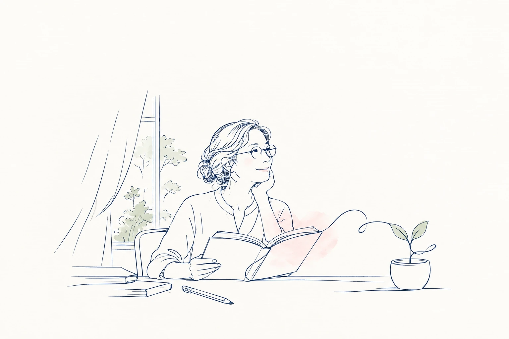
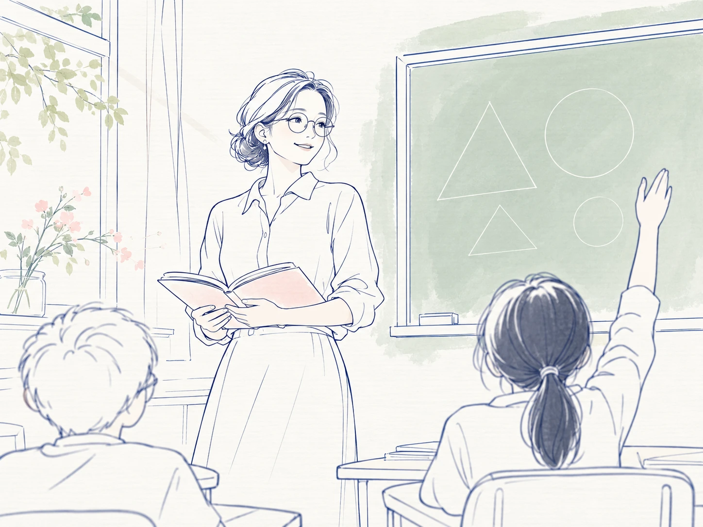

0910
致 · 每一位老师
老师，
这一次，
也看见您。
黑板上的字，作业里的批注，
您总想让我们看得更明白。

往下读
老师的眼睛，
也需要被关心
一道题讲完，
总要再问一句：“听懂了吗？”
一摞作业翻过，
连小小的进步，也不忘圈出来。
您看见了每个学生。
这个教师节，也想关心一下，
那双一直为我们忙碌的眼睛。
01
备课 · 批改批改作业，
批改作业，
小字也看清
白天没讲透的题，晚上再备一遍。
屏幕上的教案、手边的作业，
一页接着一页，小字渐渐看得费力。
万里路® XR系列，
让一臂距离内视物清晰。
看清每一步解题，
也把鼓励写进批注。
02
讲解 · 回应看向后排，
看向后排，
留意每一次举手
低头对照教案，抬头讲解板书，
再看一眼后排，谁还有疑问？
只是远近来回看，
有时还得停一下，才能对上焦。

万里路，
让近远视线切换更流畅。
教案、板书、举起的手，
目光来回，讲解继续。
03
走近 · 倾听走到身边，
走到身边，
听听他的思路
从讲台走到课桌旁，
看看他写下的步骤，听听他为什么这样想。
走动、俯身、抬头，
眼前的远近，也跟着变换。
万里路，
在移动中也能拥有清晰视觉。
走到学生身边，
看清题目，也听懂他的想法。
结尾 · 致谢老师，
老师，
教师节快乐
谢谢您，总能发现我们的小小进步。
愿您看黑板、看书，
也看见下课后的好风景。
依视路万里路，
陪老师看清课堂，也看见生活。